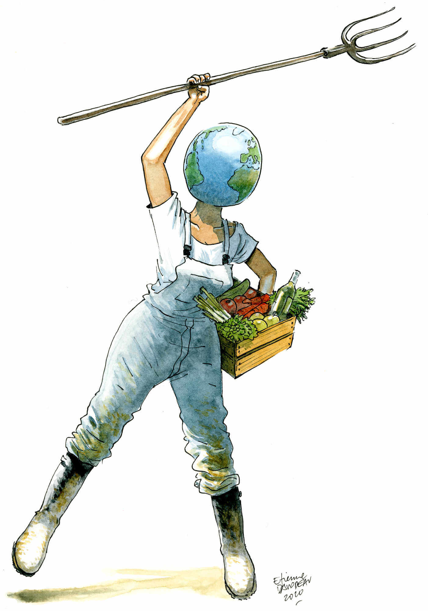

Et si l’agriculture devenait notre affaire commune ? Au milieu des années 1990, de nombreuses organisations ont contesté l’idée que le libéralisme imposé au monde par l’Organisation mondiale du commerce améliorerait notre situation.
L’agriculture a souffert. Du jour au lendemain, les prix des matières agricoles se sont effondrés, entraînant la ruine de millions de familles paysannes. Les paysans du monde entier se sont trouvés en compétition les uns contre les autres. Les conséquences dans le Sud mais également dans les pays du Nord ont été désastreuses. L’exode rural a entraîné l’explosion de la misère urbaine. Il a jeté des millions de personnes sur les routes de l’immigration.
Face à cette attaque, de nombreux réseaux dont Via Campesina se sont regroupés. Nous avons proposé une alternative : la souveraineté alimentaire. Cette proposition est reprise aujourd’hui par de nombreuses personnes qui tentent de la dévoyer. La souveraineté alimentaire est le droit des peuples de décider des moyens qu’ils souhaitent mettre en œuvre pour se nourrir en renforçant leur autonomie. Il s’agit de reprendre ce qui a été concédé aux entreprises transnationales. Elles contrôlent le commerce mondial. Elles déménagent des millions de tonnes de soja d’un continent à l’autre. Elles imposent des semences transgéniques et les pesticides qui vont avec. Elles prônent un modèle productiviste qui détruit les savoir-faire locaux.
Personne ne peut prédire comment nous sortirons de cette catastrophe. Toutefois, nous sommes nombreux à ne pas avoir attendu ce choc pour lancer des initiatives concrètes. Les paysans et les consommateurs se tournant vers l’agriculture biologique sont de plus en plus nombreux. Les circuits courts se multiplient. Nous apprenons à créer de nouvelles formes de collaboration à l’échelon de nos quartiers, de nos villages, de nos régions. Nous devons continuer à « agir glocal ».
Sans une remise en cause du cadre international, nos expériences et nos succès, dont nous sommes fiers à juste titre, resteront limités. Nos efforts pour renforcer notre autonomie, pour nous libérer du marché, seront vains. Nous ne pouvons pas accepter que des accords de libre-échange comme le Mercosur continuent à être négociés comme si de rien n’était.
Nous devons donc peser de tout notre poids pour définir des règles collectives globales basées non pas sur la compétition, comme le souhaitent Trump et tant d’autres, mais sur la coopération ; non pas sur l’égoïsme, mais sur l’échange et le respect ; non pas sur le profit, mais sur l’entraide.
Avec d’autres, je me suis mobilisé au Parlement européen pour empêcher que la réforme de la Politique agricole commune soit votée en catimini en 2019. Cette réforme prépare le renforcement de la concurrence entre les paysans des états membres. Elle ouvre également la porte aux GAFA qui préparent une agriculture 2.0 où les tracteurs téléguidés par GPS, les robots, les datas et les drones envahiront nos campagnes. Cette réforme de la PAC est inacceptable. Et si nous la combattions partout en Europe pour la faire échouer ? Il n’est pas trop tard. Qui d’entre nous acceptera demain de retrouver le monde d’hier, en pire ?
Étienne Davodeau est un dessinateur et scénariste de bande dessinée dont le travail est connu et reconnu. Alternant fictions et récits réalistes, ses histoires ancrées dans le réel tracent des portraits bien vivants de gens ordinaires aux démêlés particuliers.
Parmi ses œuvres, on compte notamment Lulu femme nue (adapté au cinéma) et des albums documentaires comme Les Ignorants, Les Mauvaises Gens ou encore Un homme est mort (adapté en long-métrage d’animation).
Etienne_Davodeau.jpeg
jose-bove-1.jpeg
José Bové s’est installé sur le plateau du Larzac depuis les années 1970 et s’implique dans la lutte victorieuse contre l’extension du camp militaire. Devenu paysan, il est co-fondateur de la Confédération paysanne et d’Attac. Il participe au démontage du McDo de Millau pour dénoncer les politiques de l’OMC et s’engage contre les OGM, actions pour lesquelles il sera condamné à de la prison. Il siège au Parlement européen de 2009 à 2019.